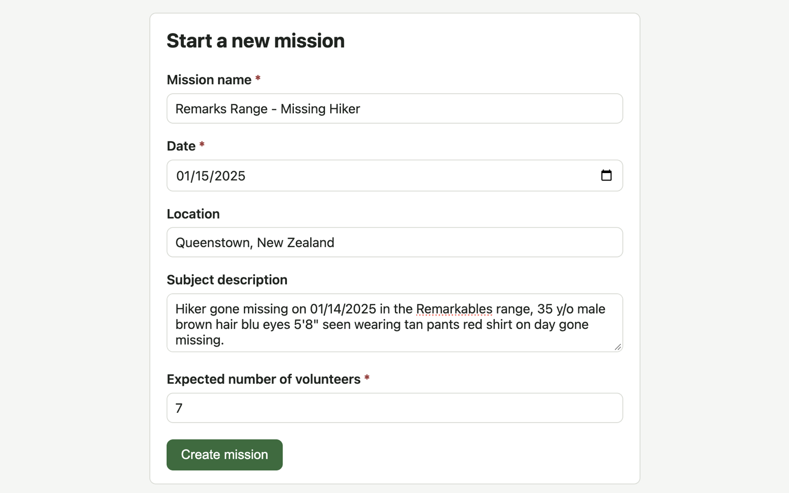

SAR Debrief
A debrief tool for search-and-rescue missions: each volunteer submits their own account through a structured questionnaire, and once everyone has submitted, the mission is ready for an AI-generated consensus debrief that reconciles the accounts and flags discrepancies for a mission lead to review.

overview
After a search-and-rescue mission, every volunteer saw a different part of it. Collecting those accounts and turning them into one debrief usually means a lot of note-chasing, and details that don't match get smoothed over. SAR Debrief gives every volunteer the same structured questionnaire built on standard SAR debrief topics, so their answers can be compared side by side.
The questionnaire covers the search assignment and area, search method (grid, hasty, sweep, K9 and more), team roles, times, weather and terrain, equipment, radio communications, hazards, clues found, whether and how the subject was located, actions taken, coordination with other agencies, and lessons learned.
Mission setup and the volunteer submission flow work today. Next is the consensus step: Claude will compare every volunteer's answers question by question and write one consolidated debrief that flags discrepancies instead of quietly dropping them, for the mission lead to review, edit and approve.
how to use it
SAR Debrief runs locally with Node.js 18+ (20 recommended). No accounts or external services are needed:
npm install
npm run dev # http://localhost:3000- Create a mission from the dashboard: name, date, location, a description of the subject, and how many volunteers are expected to submit a debrief.
- The app generates a short mission code, such as 4YVHLB, and opens the mission status page, which shows submission progress and a link to the debrief form.
- Share the form link with the team. Each volunteer enters their name and fills out the debrief questionnaire; each person can submit only once per mission.
- When the last expected volunteer submits, the mission moves from collecting to ready for consensus. If someone never submits, the mission lead can use "Close submissions now" on the status page.
details
- One questionnaire definition drives both the form and the server-side validation, so the questions never drift — and it will be what the AI prompt is built from.
- Structured choices where possible, with free-text notes, so answers are easy to compare across volunteers.
- Mission status tracks automatically: collecting → ready for consensus → complete.
- Plain HTML, CSS and JavaScript with no build step, served by Express, with SQLite in a single file.
- Next: AI consensus generation with the Claude API, a full view of each volunteer's submission, PDF or text export, passcodes, and testing with realistic multi-volunteer missions.